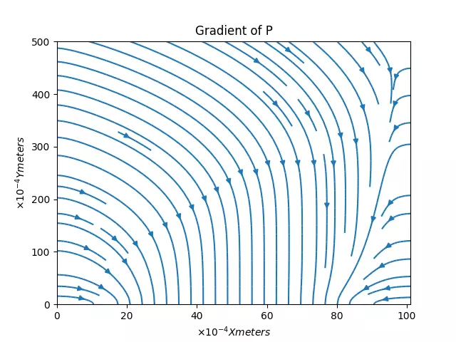
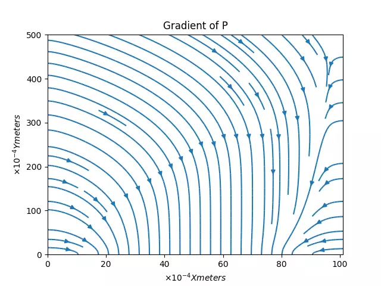

EEG-Net Classification : Cross-Subject predictions powered by Bio/Physio data
Training a custom FeedForward Binary Classifier in Tensorflow on downsampled data (and stats on that data) can filter out 70% of "uninteresting" events in the same mission timeline.

CV Classification: Transfer Learning by Synthesized Unreal Engine Datasets
A scalable data pipeline where perfect masks are generated with zero error on the edges of the mask.
TWI: Transcription Web Interface
An Automatic Speech Recognition framework with tools to convert media, generate subtitles, and update the lexicon or language model dictionary with newly corrected data

3D Rendering
An AI Assisted Text to 2D and 2D to 3D modeling pipeline to generate and send artist drafts to a local server, accelerating rough drafts for Unreal Engine renders
Particle SHAI: Simulations, Histograms, Artificial Intelligence.
ParticleSHAI is a Data Analysis Framework written in Python. Packages such as Pythia, Pyjet, Matplotlib, and TensorFlow are utilized as the back end to simulate events in the Large Hadron Collider. For more information, please refer the Thesis paper here.
Ising Model Simulation The Physical Basis of a Hopfield Network
The Ising model displays the thermodynamic properties of a ferromagnet by simulating the interactions of N2 atoms (or spin-sites) on an N × N grid. In the animation above, energy is gradually increased in time, until the structure of the lattice becomes more chaotic, indicating a phase change. For more information, please refer the original report here.

Partial Differential Equation Simulations
Simulation of needle with surfaces cooled to -20 Celsius and inlet temperature set to a sine function (above), Simulation of pressure drop in gap region of FN-99 mask (below). The needle simulation has been sped up to fit in a gif. In the program, time is an input controlled by a slider. To represent the passage of time in a simulation that's been sped up ~31x, a repeat in the brightness of the pipe indicates ~10 seconds have passed in the simulation.
 
